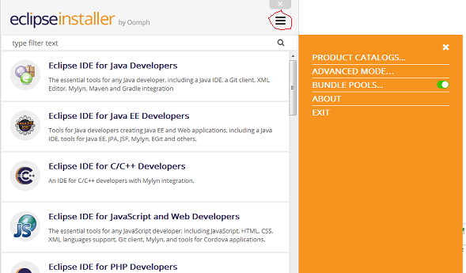

SADL Version 3 Build Instructions
For SADL 3, github.com/crapo/sadlos2/sadl3, xtext_web_prototype branch.
- If not already on host machine, install a Java 8 JDK, which can be
downloaded from
http://www.java.com.
- Install Apache Maven 3.3.9, which can be downloaded from
https://maven.apache.org/.
- Clone the SADL 3 github repository using a git command line client such as
GitBash, which can be downloaded from
https://git-scm.com/downloads. Do the following::
- Start the git client
- Change directory to the local git repository root, e.g., "c:/users/<userid>/sadl3/git"
- "git clone
https://github.com/crapo/sadlos2.git"
- "cd sadlos2"
- "git checkout origin/xtext_web_prototype -b xtext_web_prototype"
- "cd sadl3/com.ge.research.sadl.parent"
- "mvn clean verify" (this
will probably fail due to missing dependencies)
- "./gradlew build" (configure proxy servers per
instructions at
https://docs.gradle.org/current/userguide/build_environment.html)
This will take some time and may have a number of errors:
- Error on character in Java file headers:
C:\Users\200005201\sadl3-master5\git\sadlos2\sadl3\com.ge.research.sadl.parent\c
om.ge.research.sadl.tests\xtend-gen\com\ge\research\sadl\tests\model\SadlModelPr
ocessorTestAmbiguousNames.java:5: error:
unmappable
character for encoding Cp125
2
* INFORMATION of the General Electric Company (ΓÇ£GEΓÇ?)
and may contain trade
secrets
- Many complaints of the form:
Cannot install debug information
into bytecode,
because 'org.eclipse.xtext.smap'
is missing on the classpath.
Please add 'org.eclipse.xtext.smap'
to your plugin
classpath.
- Failed tests
- Install tooling features of Xtext 1.11.beta2 into the IDE from update site
http://download.eclipse.org/modeling/tmf/xtext/updates/milestones/head/S201612190948/.
Select Xtext, LSP4J, and Uncategorized to install.
- After Eclipse IDE restarts, import the nested projects, with root project
"sadl3/com.ge.research.sadl.parent", downloaded in step 3 above into the
Eclipse IDE workspace.
- Install the Buildship tooling support for Gradle into the Eclipse IDE from
update site
http://download.eclipse.org/buildship/updates/e45/milestones/2.x/, choose
version 2.0.0.v20161108-1534-m or later.
- Open target platform file under com.ge.research.sadl.target, wait until
the target definition gets resolved (watch status bar), then set the resolved
definition as the target platform. This may take some time.
- Clean all projects if errors persist in some projects.
There were some project errors at this point so I did a clean all projects,
after which com.ge.research.sadl and com.ge.research.sadl.ide had errors.
- com.ge.research.sadl/src-gen/com.ge.research.sadl.parser.antlr.lexer/InternalSADLLexer.java
had error on lines 30 & 31 because, according to the message, this line cannot
be repeated:
@SuppressWarnings("all")
@SuppressWarnings("all")
- com.ge.research.sadl.ide/src-gen/com.ge.research.sadl.ide.contentassitst.antl.internal/InternalSADLParser.java
had the same error except that when I opened the file it got rebuilt and that
error went away but then there were many errors about undefined method names,
e.g., rule__ReadStatement__Group__0.This file kept getting rebuilt everytime I
made it the focus and tried to see the error message.
- com.ge.research.sadl.ide/src-gen/com.ge.research.sadl.ide.contentassist.antlr.lexer/InternalSADLLexer.java
has the same errors on lines 30 & 31.
Introduction
SADL Version 3 uses GitHub as a source code repository. These instructions
cover setting up an Eclipse environment, obtaining the requisite Eclipse plug-in
projects from GitHub, and configuring the environment so as to be able to build
from source code a working set of SADL plug-ins for Eclipse.
Setting Up The Eclipse Development Environment
The easiest way to set up the SADL 3 development environment is to use the
Oomph-based Eclipse Installer.
- Download the appropriate version of the Eclipse Installer for your
operating system from
https://wiki.eclipse.org/Eclipse_Installer .
- Start the installer and switch to "ADVANCED MODE..." by clicking on the
menu icon in the upper-right corner of the window.

Note that you may be prompted to save the installer in a permanent location,
which you may do if you wish but is not necessary.
- Choose the Eclipse product "Eclipse Platform". Select the Product Version,
Java VM, make sure Bundle Pool is checked, then click next.
- Browse Projects down the "Github Projects" path to "Sadl3". Check "Sadl3",
then click Next.
- Check settings in the "Variables page", click Next, then Finish".
Possible Problems and Potential Solutions
There are several problems which have sometimes been encountered in the setup
process described above.
-
[ERROR] Failed to execute goal
org.eclipse.xtend:xtend-maven-plugin:2.11.0.beta2:compile (default) on project
com.ge.research.sadl.xtextgenerator: Execution default of goal
org.eclipse.xtend:xtend-maven-plugin:2.11.0.beta2:compile failed: Plugin
org.eclipse.xtend:xtend-maven-plugin:2.11.0.beta2 or one of its dependencies
could not be resolved: Failed to collect dependencies at
org.eclipse.xtend:xtend-maven-plugin:jar:2.11.0.beta2 ->
com.google.guava:guava:jar:19.0-SNAPSHOT: Failed to read artifact descriptor
for com.google.guava:guava:jar:19.0-SNAPSHOT: Could not transfer artifact
com.google.guava:guava:pom:19.0-SNAPSHOT from/to snapshots-repo (https://oss.sonatype.org/content/repositories/snapshots):
sun.security.validator.ValidatorException: PKIX path building failed:
sun.security.provider.certpath.SunCertPathBuilderException: unable to find
valid certification path to requested target -> [Help 1]
This problem appears to be caused when the Java certificate store does not
contain a required certificate. If you can go to the artifact that failed to
download in Chrome then you can identify and add the missing certificate(s) as
described here:
http://www.java-samples.com/showtutorial.php?tutorialid=210. Export
the necessary certificates to .cer files, then use keytool to import them into
the Java certificate store, e.g, at a command prompt with current folder "<JavaRoot>/jre/lib/security":
keytool
-import -alias GEExternalRootCA1 -keystore
cacerts
-file GEExternalRootCA1.cer
-
[ERROR] Failed to
execute goal org.codehaus.mojo:exec-maven-plugin:1.2.1:java (mwe2Launcher) on
project com.ge.research.sadl: An exception occured while executing the Java
class. org.eclipse.emf.mwe2.launch.runtime.Mwe2Launcher -> [Help 1]
This problem is caused by...
- Java projects not using a JDK.
Make sure that the workspace preferences have a JDK as the default JRE (Window
-> Preferences -> Java -> Installed JREs, check mark on desired JDK. Then make
sure that each Java project has that JDK's System Library on the Java
Build path (right-click on project in Package Explorer, Properties -> Java
Build Path -> Libraries). If the JRE System Library isn't the correct one,
remove it, then Add Library -> JRE System Library.
- If Maven builds fail, try running Maven from a command line with switches
to turn on additional logging/debug output.
SADL Version 3 currently is built in and for Eclipse Kepler.
- If not already installed, install Java 1.7 JDK from
http://www.java.com (Java 1.7 required!).
(See How to check Java Version.)
- Download and install Eclipse Kepler (Eclipse Standard 4.3.x) from
http://www.eclipse.org/downloads/
.
- Make sure that Eclipse is using your Java 1.7 JDK as the default:
- Open Window -> Preferences -> Java -> Installed JREs
- If you jdk1.7... is not in the list of installed JREs, click on Add...
and browse to it (to the folder above "bin")
- Check jdk1.7... as the default JRE
- Install
the Maven plug-in, m2eclipse, via the
Eclipse Update Manager from the update site: http://m2eclipse.sonatype.org/sites/m2e
- Install Xtext 2.9 from the update site
http://download.eclipse.org/modeling/tmf/xtext/updates/composite/milestones/.
The required features are Xtext and Xtend.
The Source
- Obtain the source code from GitHub (http://github.com).
The repository URL is:
https://github.com/crapo/sadlos2.git.
Setting up the target platform
- In Eclipse open the preferences
- Choose "Plug-in Development" -> "Target Platform"
- Under "Target definitions:", add if necessary and then select "com.ge.research.sadl.target" (if you see two, just pick the first)
- Double-click on the selected line. This will cause all components to be
located. When that [lengthy] process completes, click OK.
- Open the file "com.ge.research.sadl.target.target" in the
com.ge.research.sadl.target project in the target editor. Click on "Set as
Target Platform" in the upper right corner of the editor.
The Configuration
Going in the order of project dependencies, identify and remove build errors.
These might include:
- The project build path may not be valid:
- Right-click on the project and click Properties
- On the Libraries tab, fix anything that has an error marker. This might
include:
- Removing the JRE System Library and adding the one for your JDK
- Unchecking project-specific Java Compiler settings that set a
different JDK compliance than that set at the workspace level (should be
1.7)
-
Building the Plug-ins
Once the configuration is correct, all project compile errors should be
resolved. At this point the plug-ins can be tested/exercised in several ways:
-